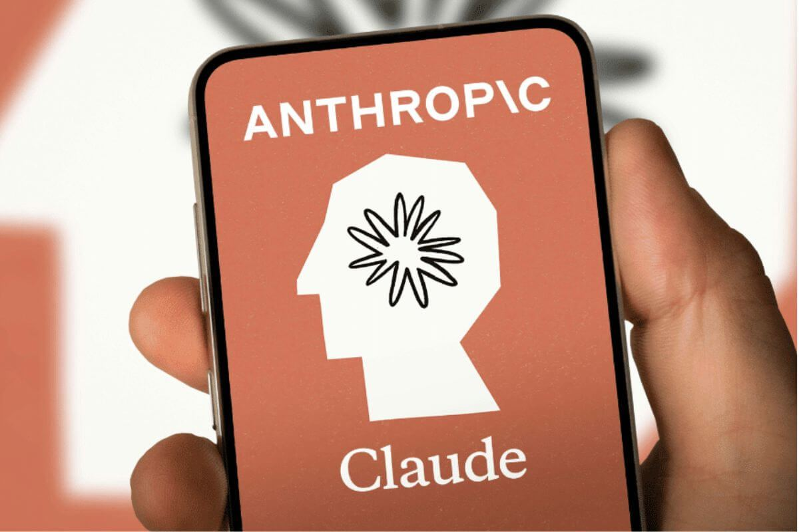
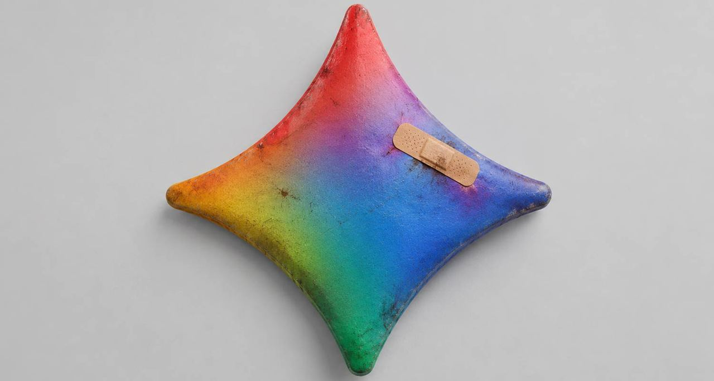
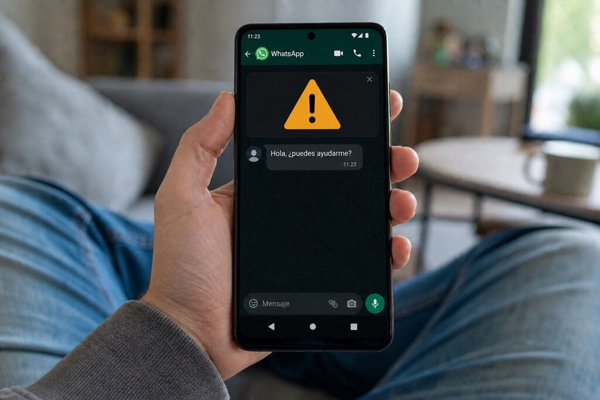
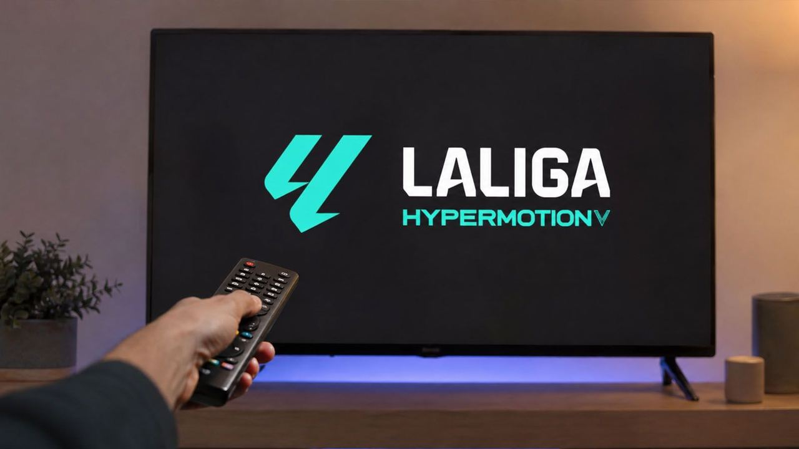

Claude bringt unsichtbare Marker für KI-generierte TexteAusgabe vom 15. August 2026
Alle Meldungen
Netz & Technik

Google hinkt bei KI hinter OpenAI und Anthropic herTarife & Angebote
Satellit & Direct-to-Cell
Regulierung & Politik
Geld & Übernahmen
Partnerschaften
Vermischtes

WhatsApp warnt künftig auf dem Gerät vor verdächtigen Fremdnachrichten
Vodafone TV zeigt zum Saisonstart alle Partien der zweiten spanischen Liga
Tarife & Angebote
5 Meldungen
Satellit & Direct-to-Cell
3 Meldungen
Regulierung & Politik
1 Meldungen
Geld & Übernahmen
2 Meldungen
Frühere Ausgaben
15. August 2026
810 neue Meldungen
14. August 2026
944 neue Meldungen
8. August 2026
256 neue Meldungen
7. August 2026
381 neue Meldungen
6. August 2026
642 neue Meldungen
5. August 2026
426 neue Meldungen
4. August 2026
124 neue Meldungen
31. Juli 2026
220 neue Meldungen
28. Juli 2026
9 neue Meldungen
27. Juli 2026
49 neue Meldungen
26. Juli 2026
4 neue Meldungen
25. Juli 2026
11 neue Meldungen
21. Juli 2026
185 neue Meldungen
20. Juli 2026
27 neue Meldungen
19. Juli 2026
233 neue Meldungen
17. Juli 2026
257 neue Meldungen
16. Juli 2026
1991 neue Meldungen